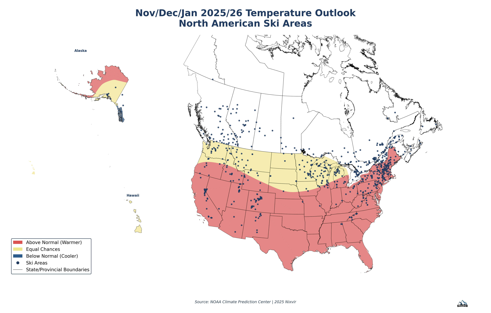
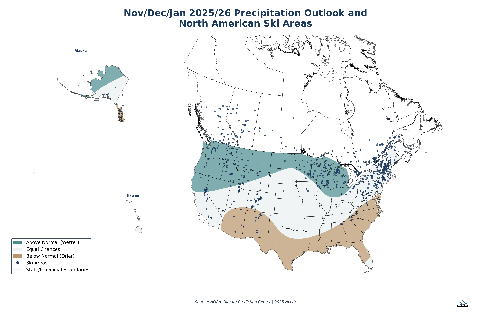
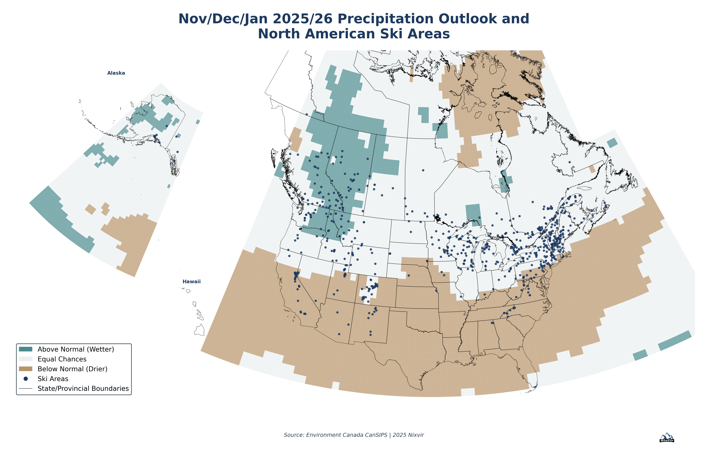

NOAA vs Environment Canada CanSIPS
Executive Summary
This analysis compares two leading seasonal forecast systems for November-December-January (NDJ) 2025-2026 across all 707 North American ski areas. The forecasts show striking differences in their temperature predictions, with implications for winter sports planning and operations.
Key Finding
CanSIPS predicts widespread warming (80% of North America "Above Normal") with high confidence, while NOAA presents a more balanced outlook with significant areas of below-normal temperatures (20% of regions).
Temperature Forecast Comparison
NOAA CPC Forecast
Balanced regional outlook with below-normal temperatures in Pacific Northwest
Environment Canada CanSIPS Forecast

Widespread above-normal temperatures across nearly entire continent
Temperature Statistics
NOAA CPC
Environment Canada CanSIPS
Precipitation Forecast Comparison
NOAA CPC Forecast
Wetter Northern tier, drier Southwest - typical La Niña-like pattern
Environment Canada CanSIPS Forecast
More widespread "Equal Chances" with less spatial structure
Precipitation Statistics
| Forecast System | Above Normal | Equal Chances | Below Normal |
|---|---|---|---|
| NOAA CPC | 29% (wetter) | 35% | 35% (drier) |
| CanSIPS | 15% (wetter) | 63% | 22% (drier) |
Detailed Technical Comparison
| Characteristic | NOAA CPC | Environment Canada CanSIPS |
|---|---|---|
| Issue Date | October 16, 2025 | October 2025 (estimated) |
| Valid Period | November-December-January 2025-2026 | November-December-January 2025-2026 |
| Spatial Resolution | 15-17 regional polygons | 7,260 grid cells (1° × 1°) |
| Forecast Methodology | Multi-model ensemble + expert forecaster interpretation | Ensemble seasonal prediction system (model-driven) |
| Temp: Above Normal | 46.7% of regions | 79.5% of grid cells |
| Temp: Below Normal | 20.0% of regions | 0.7% of grid cells |
| Avg Confidence (Temp) | 38.1% probability | 57.8% probability |
| Coverage Area | Contiguous US + Alaska + Hawaii | Global (North America shown) |
Why Do These Forecasts Differ?
1. Modeling Philosophy
CanSIPS (Model-Driven): Pure statistical ensemble output from coupled ocean-atmosphere models. The high probabilities (avg 57.8%) indicate tight agreement among ensemble members, suggesting the model "sees" a strong warming signal.
NOAA CPC (Hybrid Approach): Consolidates multiple models but adds expert forecaster interpretation, regional climate knowledge, and consideration of analogue years. Lower probabilities (avg 38.1%) reflect forecaster conservatism and acknowledgment of uncertainty.
2. Spatial Scale Differences
3. Possible Climate Drivers
- Long-term warming trend: CanSIPS may be heavily weighting anthropogenic climate change, predicting widespread warming
- ENSO neutral conditions: Both models may be interpreting neutral El Niño/La Niña conditions differently
- Arctic/North Atlantic patterns: NOAA forecasters may be factoring in Arctic Oscillation or North Atlantic patterns that suggest cooler Pacific Northwest
- Model bias: CanSIPS may have a known warm bias that NOAA forecasters correct for
4. Forecast Verification History
NOAA CPC: Has multi-decade verification record for US forecasts. Their conservatism (lower probabilities) may reflect historical skill limitations.
CanSIPS: Verified globally but may have different skill scores for North America. Higher confidence may or may not be justified by historical performance.
Implications for Ski Area Planning
Temperature Implications
Risk Management Approach
- Plan for the worse case: CanSIPS warmer scenario suggests preparing for increased snowmaking, shorter seasons, and energy cost management
- Monitor actual conditions: Early November weather will quickly reveal which model is more accurate
- Regional variation: Pacific Northwest resorts might benefit from the cooler NOAA outlook
- Precipitation uncertainty: Both models show low confidence in precipitation, suggesting normal snowfall variability
Which Forecast to Trust?
Recommended Interpretation
- For US operations: Weight NOAA CPC more heavily due to their US-focused expertise and forecaster interpretation
- For Canadian operations: Consider both forecasts; CanSIPS has regional expertise but may be overly confident
- Prudent approach: Plan for warmer conditions (CanSIPS scenario) but be prepared for regional variability (NOAA scenario)
- Update frequently: Sub-seasonal forecasts improve with shorter lead times; monitor weekly updates through November
Conclusion
The stark difference between these two reputable forecast systems highlights the inherent uncertainty in seasonal climate prediction. CanSIPS' widespread warm signal may reflect long-term climate trends or model bias, while NOAA's more conservative regional approach acknowledges forecast limitations.
For ski industry planning, the prudent approach is to prepare for warmer conditions while monitoring actual weather patterns closely. Early-season conditions in November will quickly reveal which model better captured the NDJ 2025-2026 pattern.
Follow-up Analysis: Post-season verification of these forecasts would provide valuable insights into each system's skill for North American winter sports applications. Consider tracking actual temperatures against both forecasts throughout the NDJ period.